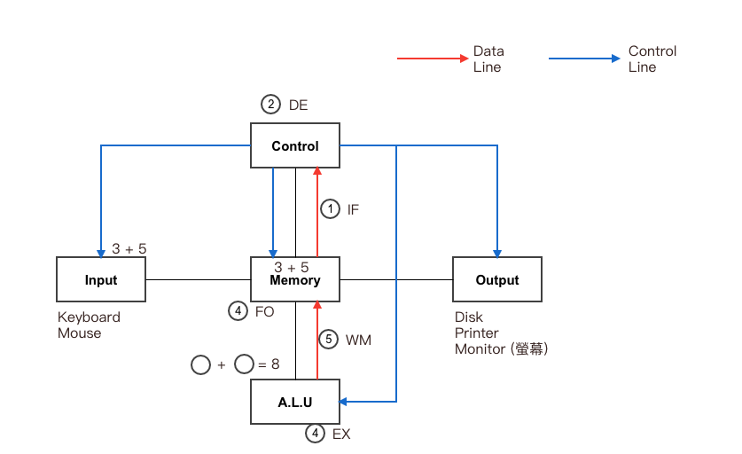
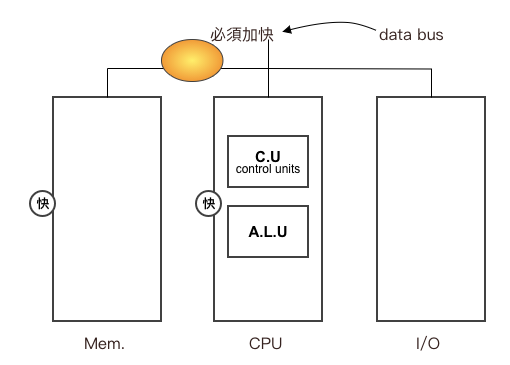
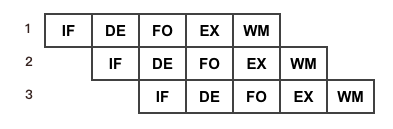
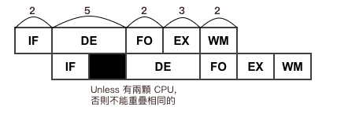
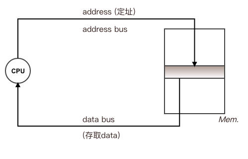
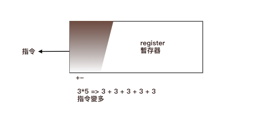
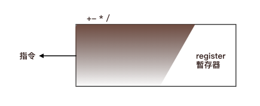
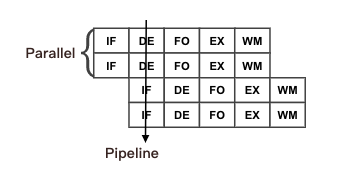

Chapter1-基本電腦概論-電腦系統介紹
1.1 電腦系統介紹
電腦發展史
| 名稱 | 組成 | 體積 | Note |
|---|---|---|---|
| 1G 第一代電腦 | 由真空管 | 大 | 溫度高，速度慢 |
| 2G 第二代電腦 | 由電晶體 | 小 | 速度快，成本低，耗電低 |
| 3G 第三代電腦 | 由積體電路 | 更小 | 速度更快，成本更低，耗電更低 |
| 4G 第四代電腦 | 由超大積體電路 | ||
| 5G 第五代電腦 | 引入人工智慧技術 |
電腦架構
常見：范紐曼架構 Von-Neumann 特色：
- 採用 內儲程式 Stored Programming 概念：
指欲執行的程式(Program)跟資料(data)必須先載入記憶體(Mem.)中，再由 CPU 從 memory 中抓取資料處理之
- 程式： Def: 由指令組合之集合，永已達到某一特定任務
- 指令：
Instruction: 電腦最基本的執行單位，過程不可分割
ex: 3+5 =>
+是指令
- 循序執行 Sequential Execution:
指令會依序一一執行
- 圖示：

- 圖示：
五大單元結構

補充：Von Neumann 瓶頸
說明：
在 CPU 和 Mem. 處理速度不斷上升之下，資料的傳輸速度將成為瓶頸

機器指令週期 (Machine Cycle)
Def: 為 CPU 執行一個指令所需的時間
5個步驟：
- Instruction Fetch (IF) 指令擷取： 從記憶體中擷取指令
- Decode (DE) 解碼： 針對擷取指令解碼，以了解所需運算為何
- Fetch Operation (FO) 擷取運算元： 從記憶體中擷取 CPU 運算所需資料
- Execution (EX) 執行： 針對擷取資料進行運算
- Write to Memory (WM) 攜回記憶體：將運算結果寫回記憶體 (反正執行一定要抓運算元)

Pipeline 管線技術
Def: 指不同指令的不同執行週期重疊執行 (Overlay execution) 謂之
目的：提升系統的執行效能 (system performance 上升)
傳統指令：

In Pipeline:

CPU 速度沒變快，只是效能提高
例：
Q: IF=3, DE=5, FO=2, EX=3, WM=2,問採 Pipeline 下, 100條指令, 所需花的總時間？
Sol:
Max(IF, DE, FO, EX, WM) = 5
(N 條指令)
公式1: 第一條指令總時間 + (N-1) * Max(各週期值) = 510
(3+5+2+3+2) + 99 * 5
(常用)
公式2: 以最大週期數算所有週期 = 520
儲存單位
- bit (位元) => 0 & 1 => 為最基本單位
- byte (位元組) byte = 8 bits
| 說明 | Tera | Giga | Mega | Kilo |
|---|---|---|---|---|
| 正確 | 2^40 | 2^30 | 2^20 | 2^10 |
| 近似 | 10^12 | 10^9 | 10^6 | 10^3 |
容量, 儲存相關 => 2進制
速度相關 => 10 進制
匯流排
- 位址匯流排(Address Bus)
- 負責傳送 CPU 所要存取的位址
- 可決定 CPU 所能處理的記憶體容量
- N 條位址線可以擁有 2 的 N 次方的記憶空間，而其位址為 0 至 2 的 N 次方來減 1 (從 0 開始，編號 0~2^N^-1)
- 資料匯流排(Data Bus)
- 負責傳送 CPU 所要存取的資料
- 其線數的多少代表 CPU 的字組 Word (大小)
- N 位元 CPU 亦就是此 CPU 有 N 條資料線 64 bits = 8 bytes word
- 控制匯流排(Control Bus)
- 負責傳送 CPU 所發出的控制訊號
- Ex: 計算 => address line + data line 
例：
Q1: 電腦 Mem size = 4GB, 有 30 條 address line(決定格數), 問 CPU word size(data line => 決定格子大小)?
Sol:
格數 * 格子大小 = 總 Mem.
2^30 * X = 4GB
X = 4 bytes = 32 bits
Q2: Mem size = 4GB, 又 data line 有 32 條(32 bits = 4 bytes), 問 address line 至少有幾條？
Sol:
X * 4 bytes = 4GB
x = 1G = 2^30 格子 => 30 條
常見的時間單位
| 毫(sec) | 微(sec) | 奈(sec) | 皮(sec) |
|---|---|---|---|
| 1 ms | 1 us | 1 ns | 1 ps |
| 10^-3 sec | 10^-6 sec | 10^-9 sec | 10^-12 sec |
1 秒 = 10^3 ms = 10^6 us = 10^9 ns = 10^12 ps
硬體介紹
- CPU (Central Processing Unit) 中央處理器
- 於大型電腦中的 CPU = Control Unit + A.L.U + Memory
- 於 PC 中的 CPU = Control Unit + A.L.U + Register + Cache Memory
- CPU 速度衡量單位
- MIPS (Million Instruction Per Second): 每秒百萬個指令
- MFLOPS (Million Floating-Point Operation Per Second): 每秒執行百萬個浮點數指令
優點： 衡量的基準點更趨一致性 - CPI (Clock Per Instruction): 一條指令花多少的 clock cycle
- clock (時脈): 電腦內部一個類似時鐘的裝置
- clock cycle (時脈週期): clock 計數一次稱為一個 clock cycle
- clock rate (時脈頻率): 指 clock 計算的速度
ex: (1) 1MHz => 每秒做 10 的 6 次方個 clock cycle
(2) 2GHz => 每秒做 2 * 10 的 9 次方 clock cycle - Ex: CPI=5 => 代表一指令執行需 5 個 clock cycle
- Ex: 下列哪個選項錯？
(A) 8KB = 2^13 bytes (2^3 * 2^30)
(B) 8MB = 2^13 KB (2^3 * 2^20 = 2^13 * 2^10)
(C) 8GB = 2^33 bytes (2^3 * 2^30 = 2^33)
(D) 8GHz = 2^33 Hz (2^3 * 10^9 = 2^20) 錯
CPU 的種類
- RISC(Reduced): 最大特點是指令長度固定，指令格式種類少，定址方式種類少，易於設計超純量(Superscalar) 和 Pipeline，暫存器數量多，RISC 比 CISC 性能高很多 
- CISC(Complex): 大量的複雜指令、可變得指令長度、多種的定址方式，大大增加了解碼的難度 
-
比較：
RISC CISC 指令數目少 定址模式少 register 多 指令數目多 定址模式多 register 少 指令長度固定，decode 易 指令長度不一，decode 不易 Compiler 翻譯出來的指令數目較多 Compiler 翻譯出來的指令數目較少 需強力的 Compiler 支援 不需強力的 Compiler 支援 代表的有 IBM RS6000, Alphachip Intel Pentium 系列 指令數目少，所以能使用 硬體線路控制 (Hardware Control) 來製作 => 速度快 指令複雜度，採用 微程式 (Microprogramming control) 方式製作 => 較有彈性 配合 Pipeline (管線技術) 和 Superscalar (超純量) => 效果佳 因為每個指令只需花一個 clock cycle 較 RISC 差 Note: Pipeline (管線技術) 和 Superscalar (超純量) => 即 Pipeline + Parallel processing => 週期長度固定
圖示： 
記憶體階層
Q: Why Memory Hierarchy?
A: 欲於 Speed 和 Cost 之間取得一平衡點
- 策略：
- 常用的 data => 往 speed 快的放
- 不常用的 data => 往 cost 低的放
記憶體的種類
- RAM (Random Access Memory) 隨機存取記憶體： SRAM, DRAM
- ROM (Read Only Memory) 唯讀記憶體
- PROM (Programming ROM) 可程式唯讀記憶體
寫入方式：燒錄器
Read many, Write once - EPROM (Erasable-Programming ROM) 可抹除式的可程式僅讀記憶體
寫入方式：UV Light 紫外線
Read many, Write many - EEPROM (Electically Erasable-Programming ROM) 電子式(可覆寫)的可抹除-可程式化的唯讀記憶體
寫入方式：電流
Read many, Write many
相較於 EPROM 可寫入更多次
- PROM (Programming ROM) 可程式唯讀記憶體
- Note: Flash ROM 快閃記憶體 (目前常用的 ROM) => 比 EEPROM 密度高(容量大)，又更便宜
ROM vs RAM
| ROM | RAM |
|---|---|
| 容量較小 | 容量較大 |
| 只可讀 | 可讀可寫 |
| Power-off, data 存在 | Power-off, data 消失 |
| 儲存：BIOS, Bootstrap Loade | 儲存：program, data |
| 非揮發性 (Non-Volatile) | 揮發性 (Volatile) |
DRAM vs SRAM
| 項目 | DRAM (Dynamic) 動態隨機存取記憶體 | SRAM (Static)靜態隨機存取記憶體 |
|---|---|---|
| 存取速度 | 慢 | 快 |
| 價格 | 低 | 高 |
| 使用元件 | 電容 (capaitor) | 正反器 (filp-flop) |
| 更新電路(Refresh) | 需更新 | 不需更新 |
| 電路密度 | 密度高 | 密度低 |
| 用途 | 作為主記憶體 (Main Memory) | 作為快取記憶體 (Cache) |
- Ex:

I/O的定址方式
- 隔離式 I/O (isolated I/O): 不佔記憶體空間，但須額外指令來區分
- 記憶體映射式 I/O (memory mapped I/O): 不需額外指令，但佔 Memory 空間
圖形表示法
- 點陣圖 bitmap
- graphic 由許多點集合而成，每一個點為一個像素 (pixel)， pixel 是顯示器的基本單位 (Bit 是最基本的儲存單位)
- 當 pixel 越多解析度就越高
- 向量圖 vector graphic
- 利用 Math 貝茲 (Bezier) 曲線去描述圖形輪廓
- 可任意的將圖形放大、縮小、旋轉，而不會出現鋸齒狀
-
Ex1: 圖形 size 為 1024 * 768, 而每個 pixels 需使用 24 bits, 問此圖 size?
Sol: 1024 * 768 * 24 bits(3 bytes) = 2304 KB 約等於 2.3 MB -
Ex2: 呈上，此圖可表示的顏色有幾種？
Sol: 1 bit => 2^1.....N bits = 2^N, Ans: 2 的 24 次方 -
Ex3: 若轉為黑白差幾倍？
Sol: 各 pixel 只需 1 bit, 所以差 24 倍 -
Ex4: 圖 1024 * 768, 由三色系 RGB 組成, 又各色系需 8 bits, 問圖的大小？
Sol: 8 bits = 1 byte